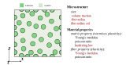

cddm_rve¶
1. problem description¶
RVE simulation is an effective approach to explore constitutive laws of composites. Generally, An RVE has two material Phases which are matrix phase and fiber phase. The following figure gives an illustration of micro-structure of a 2D RVE.
{kind=link}
microstructures, material properties, and loading conditions are three major variables which will influence the RVE properties. In order to exploit the advantages and limits of CDDM, several RVEs with similarities and differences are set up as different tasks. In detail, different tasks have different microstructures and material properties and apply the same dependent paths to generate the learning dataset
2. tasks set up¶
From the above figure, it can be seen that the microstructure of an RVE is controlled by four factors which are size of the square, volume fraction of fiber phase, and distribution parameters for generating fibers. Meanwhile, the material properties of fiber and matrix phases also influence the performance of RVEs significantly.
Therefore, several designated microstructures and material properties are given as the design variables for generating different tasks. The details of for different tasks are summarized in the following table.
{kind=link}
Moreover, the illustration of the microstructure of each task is given in the following figure.
{kind=link}
3. implementation¶
The implementation of task A is based on the following steps:
# import the function
from rvesimulator.benchmarks.cddm_rve import CDDM_RVE
from rvesimulator.additions.ampitudesampler import AmplitudeGenerator
from rvesimulator.additions.hardening_law import LinearHardeningLaw
# generate amplitude path as the design variable
# number of path
num_amplitude = 2
# initialize path sampler
path_sampler = AmplitudeGenerator(num_dim=3)
# get paths
paths = path_sampler.get_amplitude(
num_amplitude=num_amplitude,
num_control=8,
num_steps=100,
arg_name="strain_amplitude",
seed=1,
)
# convert to dict
samples_dict = paths.to_dict("records")
# initialization for task A
task_A = CDDM_RVE()
# update simulation info
taskA.update_sim_info(mesh_partition=100,
strain=[0.02, 0.02, 0.02],
vol_req=0.45,
radius_mu=0.01,
radius_std=0.003,
youngs_modulus_fiber=10,
youngs_modulus_matrix=100,
hardening_law=SwiftHardeningLaw(a=0.5, b=0.5, yield_stress=0.5),
num_cpu=8,
seed=2,
print_info=False)
task_A_results = {}
# calculate responses of simulation
for ii in range(len(samples_dict)):
task_A_results[ii] = taskA.run_simulation(
sample=samples_dict[ii], third_folder_index=ii
)
Note
For other tasks, the only difference is the initialization of the task. you can easily change the task by using corresponding parameters from the above table.